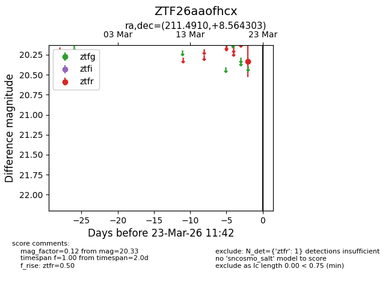
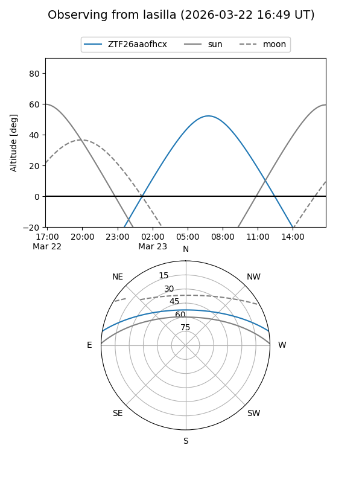
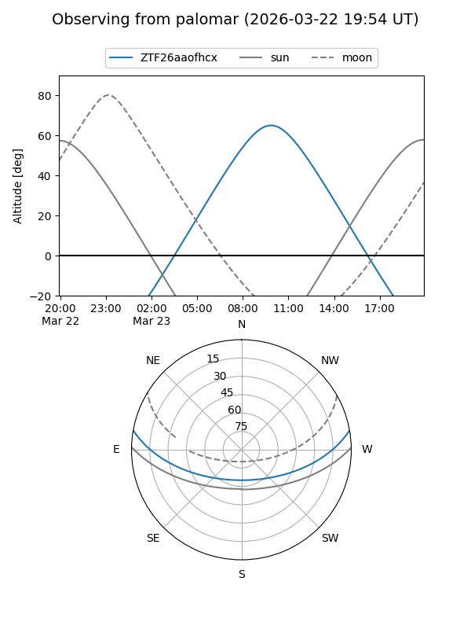

ZTF26aaofhcx
Target ZTF26aaofhcx at 2026-03-23 11:44
Aliases and brokers:
FINK: link
Lasair: link
ALeRCE: link
alt names
ZTF26aaofhcx (ztf,fink_ztf)
Coordinates:
equatorial (ra, dec) = 211.4910,+8.56430
equatorial (HMS+DMS) = 14:05:57.85,+08:33:51.49
galactic (l, b) = (349.9190,+64.40192)
Flags:
Photometry:
last ztfr=20.33
1 ztfr detections
Lightcurve

Visibility


Additional plots